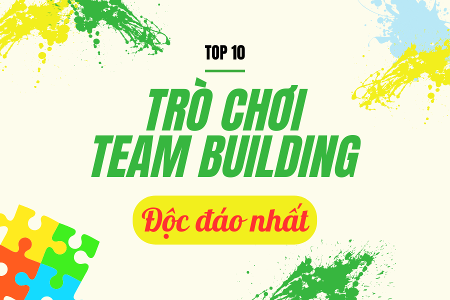
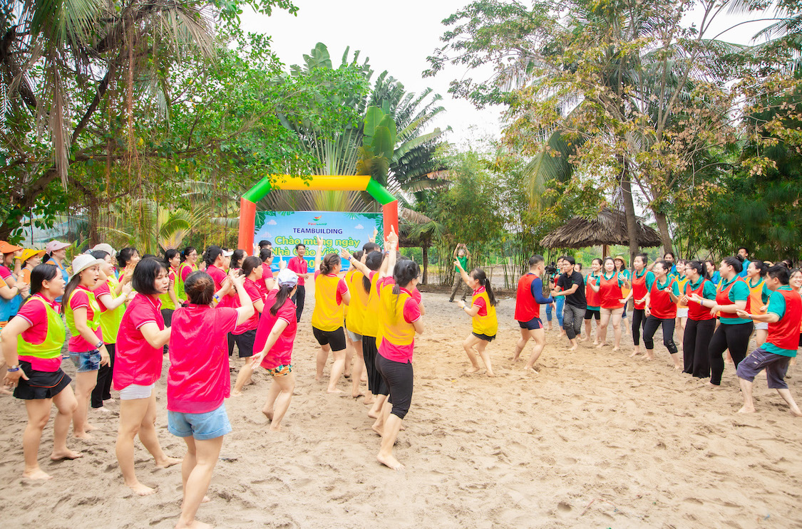
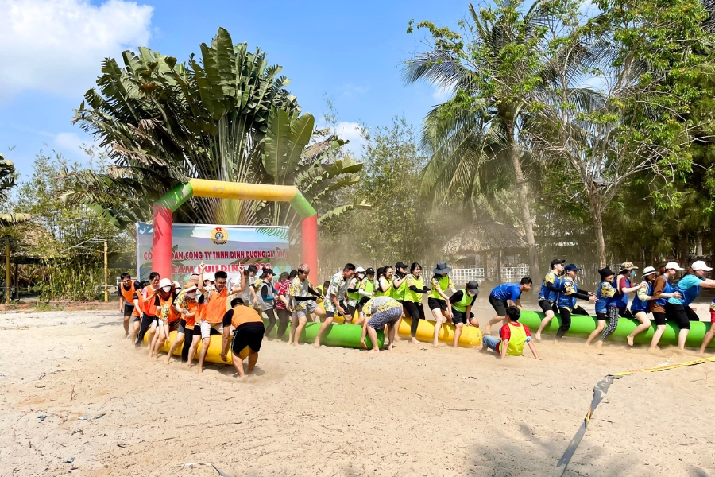
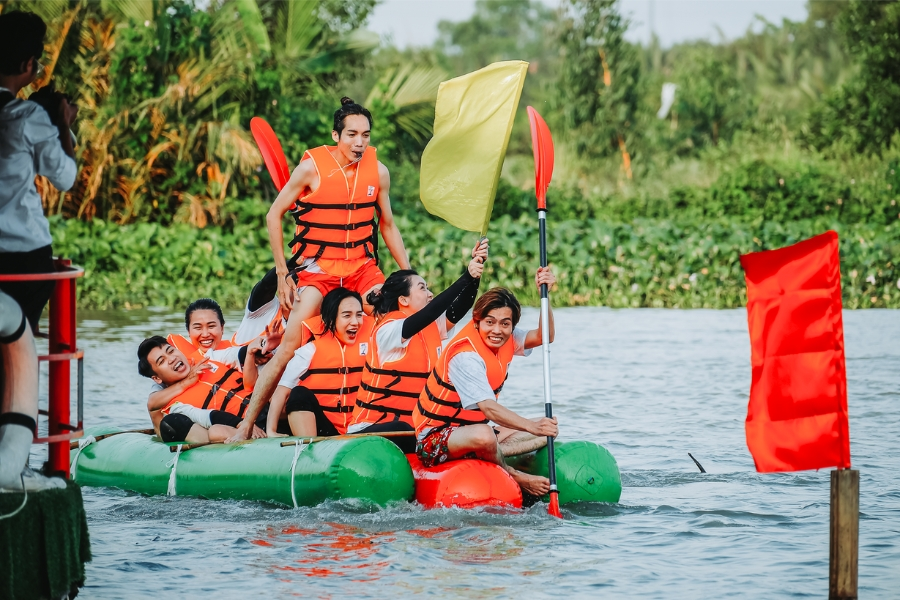
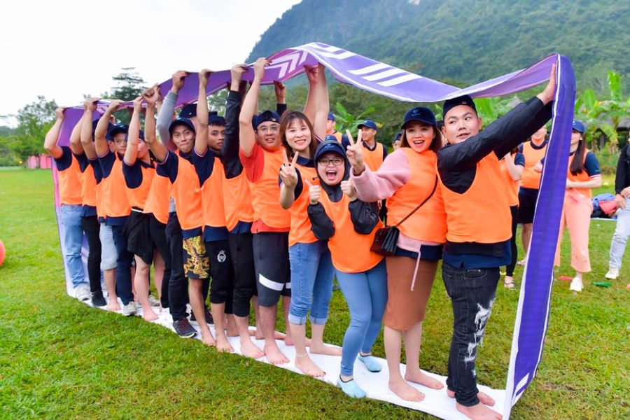
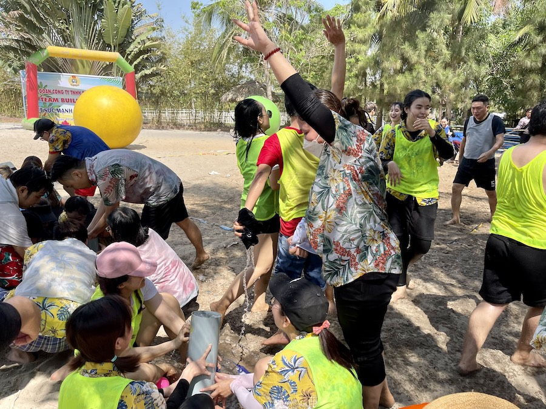
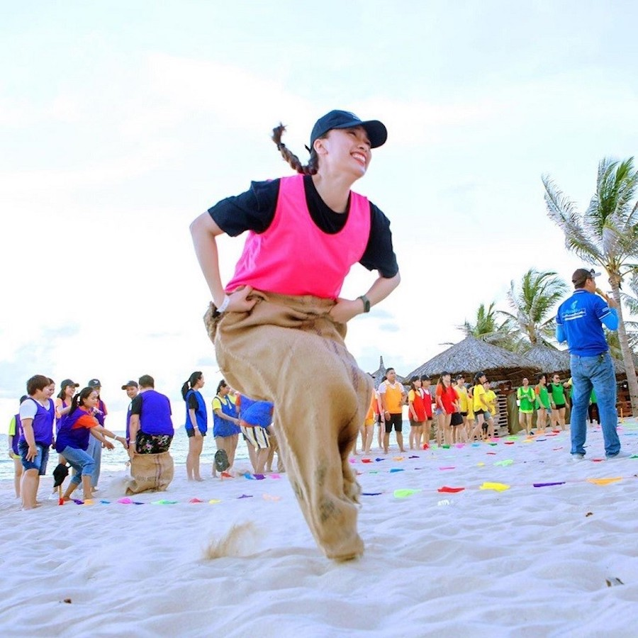
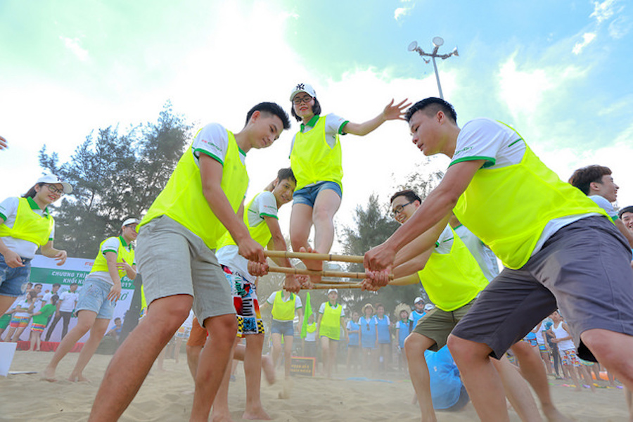
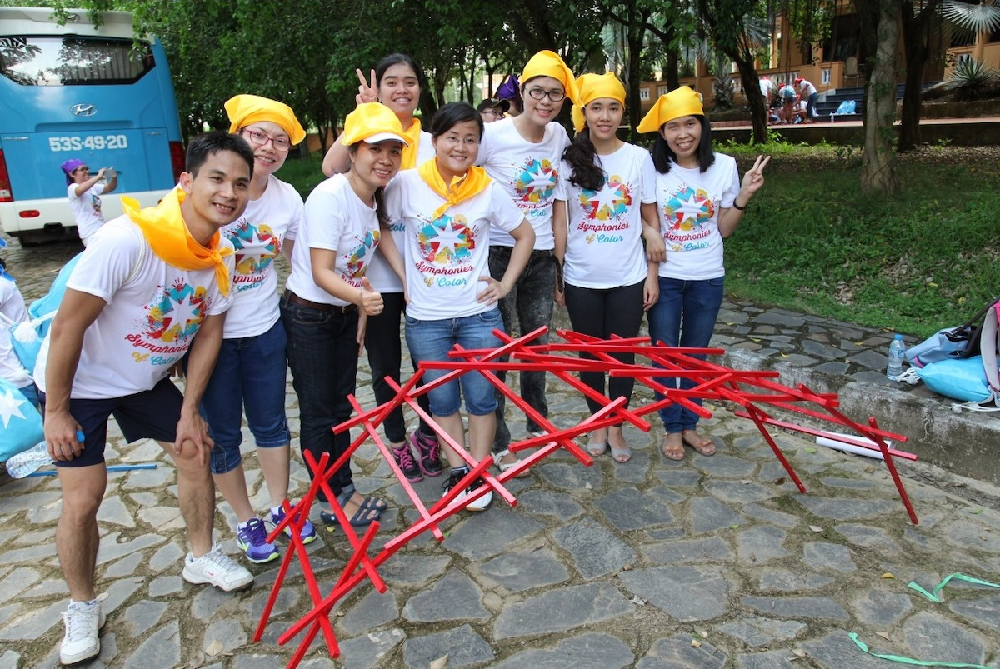

Top 10 Trò Chơi Team Building Độc Đáo & Được Yêu Thích Nhất
21/09/2023
Một chương trình Team Building được xem là thành công hay không, phần lớn nhờ vào kịch bản các trò chơi team building. Việc lựa chọn các trò chơi đa dạng, hấp dẫn, thú vị sẽ khiến đội ngũ của bạn hứng khởi, hào hứng tham gia, từ đó giúp gắn kết mọi người lại gần nhau hơn. Bài viết dưới đây được Làng Tre Việt – Funland chọn lọc sẽ gợi ý đến bạn 10 trò chơi team building hấp dẫn và độc đáo nhất, mời bạn cùng theo dõi!

1. Nhảy theo điệu nhạc cùng Team Leader

- Đội hình: Không giới hạn số lượng người tham gia, chia thành nhiều đội, mỗi đội tầm 10 người là hợp lý
- Dụng cụ: Chuẩn bị 5 – 7 đoạn nhạc theo các thể loại khác nhau
- Cách thức chơi: Ban tổ chức sẽ bật các đoạn nhạc khác nhau. Mỗi đội sẽ có 1 Team Leader bầu chọn lên bốc thăm chủ đề và mỗi đội có khoảng 7 – 10 phút luyện tập nhảy dựa trên nền nhạc đó. Bằng cách vận dụng khả năng sáng tạo của mình cùng khả năng cảm nhạc, đội nào nhảy đúng chủ đề nhạc và đẹp nhất sẽ chiến thắng.
2. Đội quân thần tốc

- Đội hình: Không giới hạn
- Dụng cụ: Ống phao dài khoảng 2m
- Cách thức chơi: Các thành viên trong đội xếp thành hàng dọc và kẹp ống phao vào giữa 2 chân và di chuyển từ vạch xuất phát đến đích. Trên đường đi, các thành viên đội khác có thể chạy xung quanh, làm trò cười hoặc hô hoán để đội chơi bị phân tâm, làm rơi phao. Đội nào di chuyển đến đích trong thời gian ngắn nhất sẽ chiến thắng, nếu làm rơi phao giữa đường sẽ phải quay lại vạch xuất phát.
3. Kết bè vượt sông

- Đội hình: Mỗi đội khoảng 10 người
- Đạo cụ: phao hơi, dây dứa, tay chèo, áo phao, một cây cờ chiến thắng
- Cách chơi: Tất cả các thành viên trong team cùng vận dụng sự sáng tạo và nhanh nhạy để kết những chiếc phao hơi thành một chiếc bè vững chắc. Sau khi kết xong, cách đội sẽ cử ra một số thành viên mặc áo phao và ngồi bè di chuyển trên sông để nhanh chóng lấy được cây cờ và mang về. Các thành viên sẽ sử dụng tay chèo để đưa bè đến nơi có cờ. Team nào lấy được cờ và mang về nhanh nhất sẽ hoàn thành thử thách và đạt được điểm số cao nhất.
4. Bánh xe thần tốc

- Đội hình: Không giới hạn
- Đạo cụ: Mỗi đội chơi chuẩn bị 1 bánh xe bạt (tấm bạt lớn dài 5m, đường kính 50cm được may liền hình dạng như bánh xe)
- Cách chơi: Mỗi đội chơi cử khoảng 6 người cùng nhau di chuyển trong vòng bánh xe bạt từ vị trí xuất phát tới đích. Sau khi đội chơi tới đích, 5 người đứng tại chỗ, 1 người chạy nhanh đưa bánh xe bạt về cho nhóm chơi tiếp theo. Trong khoảng 10 phút, đội nào đưa được nhiều thành viên về đích nhất sẽ giành chiến thắng. Trò chơi team building này đòi hỏi sự phối hợp nhịp nhàng, đoàn kết của người chơi.
5. Đưa nước về nguồn

- Đội hình: Chia thành nhiều đội, mỗi đội 8 – 10 người
- Đạo cụ: mỗi đội được phát 1 ống nước lớn dài 1m đường kính 10cm và 1 ly nhựa
- Cách thức chơi: Cách thức chơi: Từ vạch xuất phát cách hồ nước khoảng 10m và có chướng ngại vật trên đường. Lần lượt từng người chơi ở các đội cầm ly vượt qua chướng ngại vật xuống múc nước và trở về theo con đường ngại vật cũ để đổ ly nước vào trong ống và chuyền cho người tiếp theo. Các thành viên còn lại có nhiệm vụ dựng đứng ống nước, thành viên cuối cùng bịt kín đáy để nước không bị thoát ra, Sau thời gian quy định đội nào có mực nước cao hơn sẽ giành chiến thắng.
6. Chinh phục đỉnh cao
- Đội hình: Mỗi team sẽ có số thành viên bằng nhau, có thể lực tương đồng.
- Dụng cụ: mỗi đội cần 50 stickers và 2 chiếc mũ bảo hiểm.
- Cách thức chơi: Từng thành viên trong team sẽ đội mũ bảo hiểm và chinh phục đỉnh cao chính là leo lên đỉnh bức tường và dán tấm sticker lên đỉnh rồi di chuyển xuống tới lượt thành viên tiếp theo. Trong thời gian quy định, team nào dán được nhiều stickers nhất sẽ giành chiến thắng. Đây là một trong những trò chơi team building đòi hỏi nhiều thể lực hơn những trò chơi khác.
7. Nhảy bao bố

- Đội hình: Mỗi đọi từ 5 - 7 thành viên
- Đạo cụ: Bao tải to và dày
- Cách thức chơi: Các đội xếp thành hàng dọc, từng người sẽ thực hiện phần chơi của mình, người chơi có thể nhảy 1 chiều (đi) hoặc cả hai chiều (chiều đi và chiều về) tùy chọn. Ai về đích trước thì người đó chiến thắng. Đối với nhảy tiếp sức sẽ là từng người sau khi hoàn thành phần nhảy của mình thì người tiếp theo trong đội lập tức nhảy gối vào cho tới khi hết các thành viên trong đội đó. Đội nào hoàn thành phần nhảy với thời gian ngắn nhất thì đội đó chiến thắng.
8. Chuyền vòng
- Số lượng: Không giới hạn.
- Dụng cụ: Vòng gỗ hoặc nhựa có bán kính 1m.
- Luật chơi: Các thành viên trong đội nắm tay nhau đứng thành 1 hàng ngang. Người đầu tiên sẽ chuyền vòng đi qua người và đưa đến người thứ 2 cho đến hết hàng. Đội nào chuyền vòng xong đầu tiên là đội chiến thắng. Lưu ý, vòng phải được chuyền qua từng người.
9. Vận chuyển người

- Đội hình: Chia thành các đội, mỗi đội khoảng 8 – 10 người
- Cách thức chơi: Chia thành các đội, mỗi đội tối thiểu 5 người. Các đội chơi tập trung tại vạch xuất phát, cử một thành viên làm người được vận chuyển. Các thành viên còn lại sẽ là người vận chuyển. Cứ 2 thành viên sẽ cầm một đồ chơi team building đó chính là 1 thanh tre và xếp thành một hàng dọc. Khi hiệu lệnh từ người quản trò bắt đầu, các thành viên sẽ dùng thanh tre tạo thành một con đường liền mạch trên không, đưa thành viên được vận chuyển qua vạch đích. Đội nào đưa được thành viên qua được vạch đích sớm nhất sẽ giành chiến thắng.
Có thể chơi thành nhiều lượt bằng cách chọn nhiều người được vận chuyển. Khi một người được đưa đến vạch đích, cả đội sẽ quay về vạch xuất phát để vận chuyển người tiếp theo. Đội nào đưa được tất cả các người được vận chuyển về vạch đích sớm nhất sẽ giành chiến thắng.
10. Xây cầu Davinci

- Đội hình: Chia thành các đội, mỗi đội từ 3 người trở lên
- Cách thức chơi: Mỗi đội sẽ nận được 10 thanh gỗ, sau đó dùng những thanh gỗ này tạo thành 1 cây cầu sao cho khi đặt một bình nước lên, cây cầu không bị ngã đổ mà không cần dùng bất kì một nguyên vật liệu để kết dính hay liên kết các thanh gỗ. Với chiều dài 40cm cho mỗi thanh gỗ có đường kính khoảng 5cm sẽ tương đương với 5 lít nước. Người quản trò có thể linh hoạt lượng nước sao cho phù hợp với thanh gỗ.
Nên tổ chức Team Building ở đâu phù hợp?
Việc cân nhắc, chọn đúng địa điểm sẽ mang đến cho mọi người chuyến đi vui vẻ, đáng nhớ. Và làm sao để có thể lựa chọn được nơi tổ chức team building ưng ý nhất cũng là vấn đề nan giải.
Làng du lịch sinh thái Tre Việt – Funland sẽ là nơi tổ chức team building phù hợp dành cho các nhóm bạn, gia đình, công ty và các doanh nghiệp. Với khuôn viên hơn 5ha cùng bãi cát trắng, dòng sông xanh,… nơi diễn ra các hoạt động vui chơi vui nhộn và thú vị. Kết hợp cùng với đó bạn cũng có thể trải nghiệm một chuyến “du lịch sinh thái” một cách trọn vẹn với khung cảnh miền quê bình yên, các món ăn sông nước đặc sắc, tham gia hoạt động mò cua bắt cá trồng rau,…
Với những chia sẻ trên, chắc hẳn bạn đã có thêm những ý tưởng cho mình. Các trò chơi team building hấp dẫn góp phần mang đến những trải nghiệm tốt cho chuyến đi. Nếu đang phân vân, chưa biết lên kế hoạch tổ chức team building như nào đạt hiệu quả nhất thì hãy liên hệ ngay tới Làng Tre Việt - Funland qua hotline 0862 777 827 để được tư vấn trực tiếp.
Bài viết khác
- Bỏ Túi Ngay 25 Khu Du Lịch Sinh Thái Gần Sài Gòn Lý Tưởng Nhất Năm Nay
- Team Building - Nơi gắn kết những giá trị đồng đội
- Tết đi đâu Chơi ở gần Sài Gòn – 9 Địa điểm Chơi Tết đầy Thú Vị
- YEAR END PARTY - CÙNG NHÌN LẠI MỘT HÀNH TRÌNH
- Điểm vui chơi hot sát vách Sài Gòn
- 20 Địa Điểm Tổ Chức Team Building Rộng Rãi, Lý Tưởng, Gần Sài Gòn NHẤT